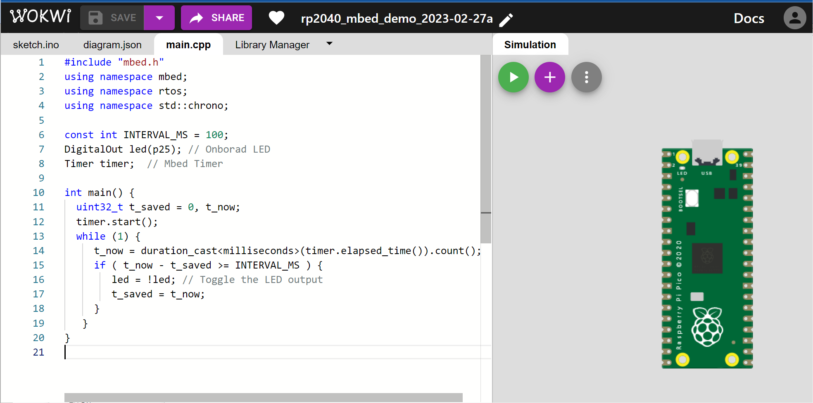

ARM Mbed OS for Raspberry Pi Pico RP2040: Code Examples (Part 1)#
เนื้อหาในส่วนนี้สาธิตการเขียนโค้ดโดยใช้ Mbed OS และ Arduino IDE สำหรับบอร์ดไมโครคอนโทรลเลอร์ที่ใช้ชิป RP2040 เช่น Raspberry Pi Pico โดยนำเสนอเป็น ตอนที่ 1
แนะนำให้ศึกษาจากบทความเริ่มต้นเกี่ยวกับ Mbed OS และบทความแนะนำไมโครคอนโทรลเลอร์ RP2040 สำหรับเรียนรู้ด้านระบบสมองกลฝังตัว
Keywords: Mbed OS, Raspberry Pi Pico, RP2040, Mbed-enabled Platforms, RTOS Programming
- LED Blink โดยใช้ DigitalOut() ของ Mbed OS
- LED Blink โดยไม่ใช้คำสั่ง delay()
- LED Blink โดยการสร้าง Thread
- LED Blink โดยใช้คลาส Ticker และ Timeout
- LED Fading โดยการสร้างสัญญาณ PWM
- การจำลองการทำงานด้วย WokWi Simulator
▷ LED Blink โดยใช้ DigitalOut() ของ Mbed OS#
โค้ดนี้สาธิตการใช้คลาส DigitalOut
ของ Mbed Drivers เพื่อใช้สำหรับขา GPIO
ที่เป็นขาดิจิทัลในทิศทางเอาต์พุต เช่น ใช้กับขา GP25 ของ LED
ในตัวอย่างนี้มีการใช้คลาส DigitalOut
ภายใต้ชื่อ mbed ซึ่งเป็น C++ namespace
และสร้างอ็อบเจกต์ใหม่ชื่อ led สำหรับใช้งานขา GP25 เป็นเอาต์พุต
#include "mbed.h"
#define LED_PIN (p25) // use on-board LED (GP25 pin)
mbed::DigitalOut led( LED_PIN ); // use onboard LED
void setup() {
SerialUSB.begin( 115200 );
}
String sbuf; // string buffer object
void loop() {
led = !led; // toggle and update the LED output
sbuf = "LED state: ";
sbuf += led.read(); // read LED status
SerialUSB.println( sbuf.c_str() ); // send a string to SerialUSB
rtos::ThisThread::sleep_for(
std::chrono::milliseconds(100)
);
}
หรือจะสร้างไฟล์และเขียนโค้ดใน main.cpp แทนการเขียนโค้ดในไฟล์ .ino (ให้เป็นไฟล์ว่างเปล่า) ตามรูปแบบต่อไปนี้ ก็ทำได้เช่นกัน
และสังเกตว่า ไม่มีการสร้างฟังก์ชัน setup(){...} และ loop(){...}
#include "mbed.h"
#include "USB/PluggableUSBSerial.h"
#define LED_PIN (p25) // use on-board LED (GP25 pin)
mbed::DigitalOut led( LED_PIN ); // use onboard LED
String sbuf; // String buffer object
int main() {
PluggableUSBD().begin();
SerialUSB.begin( 115200 );
while(1) {
led = !led; // toggle and update the LED output
sbuf = "LED state: ";
sbuf += led.read();
SerialUSB.println( sbuf.c_str() ); // send a string
rtos::ThisThread::sleep_for(
std::chrono::milliseconds(100)
);
}
}
การใช้คำสั่ง sleep_for(...) ของ
rtos::ThisThread
ภายใต้ C++ namespace ที่มีชื่อว่า
rtos
ให้ผลเหมือนคำสั่ง delay(...) ของ Arduino Core API
คำสั่งนี้จะทำให้ Main Thread
หรือ 'เธรดหลัก' ที่เกี่ยวข้องกับการทำงานของฟังก์ชัน main(){...}
หยุดทำงานชั่วคราวตามระยะที่กำหนดไว้ แล้วจึงทำงานต่อ
อีกคำสั่งหนึ่งที่ให้ผลเหมือนกันคือ
thread_sleep_for(...) ซึ่งเป็นคำสั่งที่ใช้กับเธรด โดยจะต้องระบุค่าตัวเลขเป็นจำนวนเต็มบวก (หน่วยเป็นมิลลิวินาที)
ข้อสังเกต: ในตัวอย่างนี้ มีการใช้คำสั่งของ Arduino Core for Mbed เช่น PluggableUSBD()
และ SerialUSB (ถูกสร้างมาจากคลาส USBSerial)
สำหรับส่งข้อความผ่านทาง USB ไปยังคอมพิวเตอร์
▷ LED Blink โดยไม่ใช้คำสั่ง delay()#
ตัวอย่างนี้สาธิตการเขียนโค้ด LED Blink โดยไม่ใช้คำสั่ง delay(...) ของ Arduino API
แต่ใช้วิธีอ่านค่าเวลาของระบบในหน่วยเป็นมิลลิวินาที โดยใช้คำสั่ง millis()
เพื่อนำมาใช้กำหนดช่วงเวลาในการเปลี่ยนสถานะของ LED ในครั้งถัดไป
#define LED_PIN (p25) // use on-board LED (GP25 pin)
uint32_t start_time_ms, saved_time_ms = 0;
void setup() {
SerialUSB.begin( 115200 );
pinMode( LED_PIN, OUTPUT );
saved_time_ms = start_time_ms = millis();
}
String sbuf;
void loop() {
uint32_t now = millis();
if ( now - saved_time_ms >= 100 ) {
saved_time_ms = now;
digitalWrite( LED_PIN, !digitalRead( LED_PIN ) );
sbuf = "LED state: ";
sbuf += digitalRead( LED_PIN );
sbuf += ", time: ";
sbuf += (now - start_time_ms);
SerialUSB.println( sbuf.c_str() );
}
}
หากลองเปลี่ยนมาใช้คำสั่งตามรูปบบของ Mbed OS API ดูบ้าง เช่น ในโค้ดต่อไปนี้
มีการสร้างฟังก์ชัน get_time_msec(...) มาใช้แทนคำสั่ง millis(...) ของ Arduino
#include "mbed.h"
using namespace std::chrono;
#define LED_PIN (p25) // use on-board LED (GP25 pin)
mbed::DigitalOut led( LED_PIN ); // onboard LED
uint32_t get_time_msec() {
auto now = rtos::Kernel::Clock::now();
auto tp = time_point_cast<microseconds>(now);
return (uint32_t) tp.time_since_epoch().count()/1000;
}
uint32_t start_time_ms, saved_time_ms = 0;
void setup() {
SerialUSB.begin( 115200 );
saved_time_ms = start_time_ms = get_time_msec();
}
String sbuf;
void loop() {
uint32_t now = _millis();
if ( now - saved_time_ms >= 100 ) {
saved_time_ms = now;
led = !led; // toggle and update the LED output
sbuf = "LED state: ";
sbuf += led.read();
sbuf += ", time: ";
sbuf += (now - start_time_ms);
sbuf += " ms";
SerialUSB.println( sbuf.c_str() );
}
}
หรือจะใช้คำสั่ง thread_sleep_until(...) ของ Mbed OS
เพื่อหยุดการทำงานชั่วคราวของเธรดที่กำลังทำงานในขณะนั้น จนถึงเวลาครั้งถัดไปในอนาคตตามที่กำหนดไว้
#include "mbed.h"
using namespace mbed; // for DigitalOut
using namespace rtos; // for ThisThread
using namespace std::chrono; // for milliseconds()
const PinName LED_PIN = p25;
DigitalOut led( LED_PIN ); // onboard LED
uint64_t next_time_ms, start_time_ms; // timestamps
void setup() {
SerialUSB.begin( 115200 );
while(!SerialUSB){} // wait until the Serial port is open.
start_time_ms = next_time_ms = Kernel::get_ms_count();
}
String sbuf;
void loop() {
uint32_t ts;
led = !led; // toggle the LED state
sbuf = "LED state: ";
sbuf += led.read();
sbuf += ", time: ";
ts = Kernel::get_ms_count() - start_time_ms;
sbuf += ts;
sbuf += " ms";
SerialUSB.println( sbuf.c_str() );
next_time_ms += 100;
thread_sleep_until( next_time_ms );
}
▷ LED Blink โดยการสร้าง Thread#
ตัวอย่างนี้สาธิตการเขียนโค้ดเพื่อสร้าง 'เธรด' (Thread) จากเธรดหลัก
และให้ทำหน้าที่สลับสถานะลอจิกของ LED เว้นช่วงเวลาตามที่กำหนดไว้ เช่น 100 msec
เมื่อเธรดหลักทำให้เธรดใหม่ (LED Thread) เริ่มทำงาน
ก็จะถูกหยุดรอแบบไม่มีกำหนด โดยใช้คำสั่ง osDelay( osWaitForever )
ซึ่งเป็นคำสั่งตามรูปแบบของ CMSIS RTOS
#include "mbed.h"
using namespace mbed; // for mbed::DigitalOut
using namespace rtos; // for rtos::Thread
#define LED_PIN (p25) // use on-board LED (GP25 pin)
DigitalOut led( LED_PIN ); // on-board led pin
Thread thread; // the led-blink thread
void toggle( DigitalOut *pin ) { // thread entry function
auto sleep_ms = std::chrono::milliseconds( 100 );
SerialUSB.println("LED-blink thread started...");
while(1) {
*pin = !*pin; // toggle the pin
ThisThread::sleep_for( sleep_ms );
}
}
void setup() {
SerialUSB.begin( 115200 );
while(!SerialUSB){} // wait until the USB serial port is open.
thread.start( callback(toggle,&led) ); // start the thread
osDelay( osWaitForever ); // the main thread will wait forever
}
void loop() {} // not executed
แต่ถ้าลองเปลี่ยนมาสร้างเธรด เช่น threadA และ threadB ที่มีระดับความสำคัญ หรือ
ค่า Priority Level เท่ากัน (osPriorityNormal)
และให้ทำหน้าที่กำหนดสถานะของ LED ที่แตกต่างกัน คือ ลอจิก 0 และ 1 ตามลำดับ แต่สลับช่วงเวลากัน
ในกรณีนี้เราสามารถใช้ Mutex (Mutual Exclusion) ของ Mbed OS
เพื่อป้องกันและให้มีเพียงเธรดเดียวในแต่ละช่วงเวลาที่เข้าถึงและกำหนดสถานะของ LED ได้
#include "mbed.h"
using namespace mbed;
using namespace rtos;
#define LED_PIN (p25) // use on-board LED (GP25 pin)
DigitalOut led( LED_PIN );
Thread threadA(osPriorityNormal), threadB(osPriorityNormal);
Mutex mutex;
typedef struct _thread_arg {
DigitalOut *pin;
uint32_t id;
uint32_t sleep_ms;
} thread_arg_t;
// used to pass thread's arguments
thread_arg_t thread_args[] = {
{ .pin = &led, .id = 0, .sleep_ms = 100 },
{ .pin = &led, .id = 1, .sleep_ms = 100 },
};
void led_update( thread_arg_t *args ) {
String s;
auto sleep_ms = std::chrono::milliseconds( args->sleep_ms );
while(1) {
mutex.lock();
args->pin->write( args->id );
s = "thread id ";
s += args->id;
SerialUSB.println( s.c_str() );
ThisThread::sleep_for( sleep_ms );
mutex.unlock();
}
}
void setup() {
SerialUSB.begin( 115200 );
// start threads A and B
threadA.start( callback(led_update, &thread_args[0]) );
threadB.start( callback(led_update, &thread_args[1]) );
osDelay( osWaitForever ); // the main thread will wait forever
}
void loop() {} // not executed
▷ LED Blink โดยใช้คลาส Ticker และ Timeout#
การทำให้ LED กระพริบด้วยอัตราคงที่นั้น เป็นการทำงานแบบที่มีคาบ (Periodic Task)
ในกรณีนี้เราสามารถใช้คลาส Ticker
ของ Mbed Drivers ตามตัวอย่างต่อไปนี้
ขา GP25 จะถูกใช้เป็นเอาต์พุตสำหรับวงจร LED และสร้างอ็อบเจกต์จากคลาส Ticker
เพื่อคอยทำคำสั่งของฟังก์ชันที่เป็น Callback และเกิดขึ้นซ้ำตามระยะเวลาที่กำหนดไว้ เช่น
ให้เรียกฟังก์ชัน callback(){...} ทุก ๆ 100 มิลลิวินาที
#include "mbed.h"
using namespace mbed;
using namespace rtos;
#define LED_PIN (p25) // use on-board LED (GP25 pin)
DigitalOut led( LED_PIN );
Ticker ticker;
const auto interval = std::chrono::microseconds(100*1000);
void toggle( DigitalOut *pin ) { // ISR callback function
*pin = !*pin; // toggle LED pin
}
void setup() {
SerialUSB.begin( 115200 );
while(!SerialUSB){} // wait for serial to open
SerialUSB.println( "Ticker demo..." );
ticker.attach( callback(toggle, &led), interval );
osDelay( osWaitForever ); // block the main thread
}
void loop() {} // not executed
Timeout
ของ Mbed Drivers เป็นอีกตัวเลือกหนึ่งสำหรับสร้างเหตุการณ์ให้เกิดขึ้นในอนาคต
ใช้สำหรับการกำหนดเวลาในอนาคตเพื่อให้เรียกใช้ฟังก์ชัน Callback ที่เกี่ยวข้อง
เมื่อเวลาผ่านไปตามที่กำหนดไว้ แต่จะทำเพียงครั้งเดียว ลองมาดูตัวอย่างการใช้ Timeout กับการทำงานที่เกิดขึ้นซ้ำได้
#include "mbed.h"
using namespace mbed;
#define LED_PIN (p25) // use on-board LED (GP25 pin)
DigitalOut led( LED_PIN );
Timeout timeout;
const auto interval = std::chrono::microseconds(100*1000);
void toggle( DigitalOut *pin ) {
*pin = !*pin; // toggle LED pin
timeout.attach( callback(toggle,pin), interval );
}
void setup() {
SerialUSB.begin( 115200 );
while (!SerialUSB){} // wait for serial to open
SerialUSB.println( "Timeout demo..." );
timeout.attach( callback(toggle, &led), interval );
osDelay( osWaitForever ); // block the main thread
}
void loop() {} // not executed
▷ LED Fading โดยการสร้างสัญญาณ PWM#
ตัวอย่างนี้สาธิตการเขียนโค้ดโดยใช้ PwmOut
ของ Mbed Drivers เพื่อสร้างสัญญาณแบบ PWM (Pulse Width Modulation)
ตั้งค่าความถี่ไว้เท่ากับ 500 Hz หรือมีคาบเท่ากับ 2000 usec (2 msec)
LED ที่ขา GP25 จะสว่างขึ้นและดับลง วนซ้ำสลับกันไปเรื่อย ๆ โดยการปรับค่า Duty Cycle ของ PWM
ในช่วง 0 ถึง 100% (อัตราส่วนของความกว้างของพัลส์ High เทียบกับความกว้างของหนึ่งคาบ) ในทิศทางเพิ่มและลดลง
#include "mbed.h"
using namespace mbed;
#define LED_PIN (p25) // use on-board LED (GP25 pin)
#define STEPS (10) // number of LED brightness steps
const uint32_t PWM_PERIOD_US = 2000; // frequency 500Hz
PwmOut led_pwm( LED_PIN ); // use onboard LED
void setup() {
SerialUSB.begin( 115200 );
led_pwm.period_us( PWM_PERIOD_US );
led_pwm.pulsewidth_us( 0 );
}
char sbuf[32];
void loop() {
uint32_t t, pw;
for (uint32_t i=0; i < 2*STEPS; i++) {
t = (i*PWM_PERIOD_US/STEPS);
pw = (t <= PWM_PERIOD_US) ? t : 2*PWM_PERIOD_US-t;
led_pwm.pulsewidth_us( pw );
sprintf( sbuf, "step %2lu) %lu", i, pw );
SerialUSB.println( sbuf );
delay(100);
}
}
หรือจะเปลี่ยนไปใช้คำสั่ง analogWrite() ของ Arduino API
สำหรับสร้างสัญญาณ PWM (ความถี่ 500 Hz เป็นค่า default) ก็เป็นไปตามตัวอย่างโค้ดต่อไปนี้
#define LED_PIN (p25) // use on-board LED (GP25 pin)
#define STEPS (10) // number of LED brightness steps
#define MAX_VALUE (1023)
void setup() {
SerialUSB.begin( 115200 );
pinMode( LED_PIN, OUTPUT );
analogWriteResolution( 10 ); // use 10-bit value
analogWrite( LED_PIN, 0 );
}
char sbuf[32];
void loop() {
uint32_t t, pw;
for ( uint32_t i=0; i < 2*STEPS; i++ ) {
t = (i*MAX_VALUE/STEPS);
pw = (t <= MAX_VALUE) ? t : 2*MAX_VALUE-t;
analogWrite( LED_PIN, pw );
sprintf( sbuf, "step %2lu) %lu", i, pw );
SerialUSB.println( sbuf );
delay( 100 );
}
}
▷ การจำลองการทำงานด้วย WokWi Simulator#
WokWi รองรับการเขียนโปรแกรมและจำลองการทำงานเสมือนจริงสำหรับบอร์ด Raspberry Pico (RP2040) ผู้ใช้สามารถเลือกรูปแบบการเขียนโค้ดได้หลายแบบ ในกรณีที่ต้องการลองใช้คำสั่งของ Mbed OS ให้สร้างโปรเจกต์ใหม่ ซึ่งปรกติแล้วจะเขียนโค้ดด้วย Arduino Sketch (.ino)
แต่แนะนำให้สร้างไฟล์ main.cpp ในโปรเจกต์และเขียนโค้ดในไฟล์ดังกล่าว
แทนการเขียนโค้ดในไฟล์ .ino ดังนั้นจึงไม่มีการสร้างฟังก์ชัน setup() และ loop()
แต่ให้สร้างฟังก์ชัน main() ตามโค้ดในรูปตัวอย่างต่อไปนี้

รูป: ตัวอย่างการจำลองการทำงานด้วย WokWi Simulator
This work is licensed under a Creative Commons Attribution-ShareAlike 4.0 International License.
Created: 2021-04-16 | Last Updated: 2023-03-04